Cloth Simulator
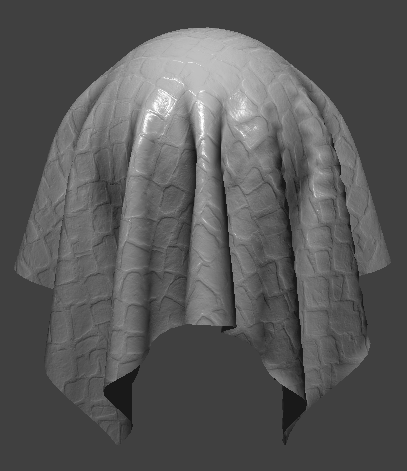
Overview
In this project, we model a cloth material as a system of discrete masses and springs, simulating its physical evolution within several environments in real time via numerical integration. We implement collisions between the cloth and rigid external objects as well as internal collisions among components of the cloth itself. Finally, we create a variety of shader programs to give the cloth an upgraded appearance, complete with personalized shading and textures.
Masses and Springs
To simulate our cloth, we construct a grid of point masses and connect them with three different types of springs. Structural springs connect adjacent point masses horizontally and vertically while shearing springs link point masses diagonally across the structural springs. Bending springs attach every two point masses both in the horizontal and vertical direction, leaving a gap to allow more flexibility.
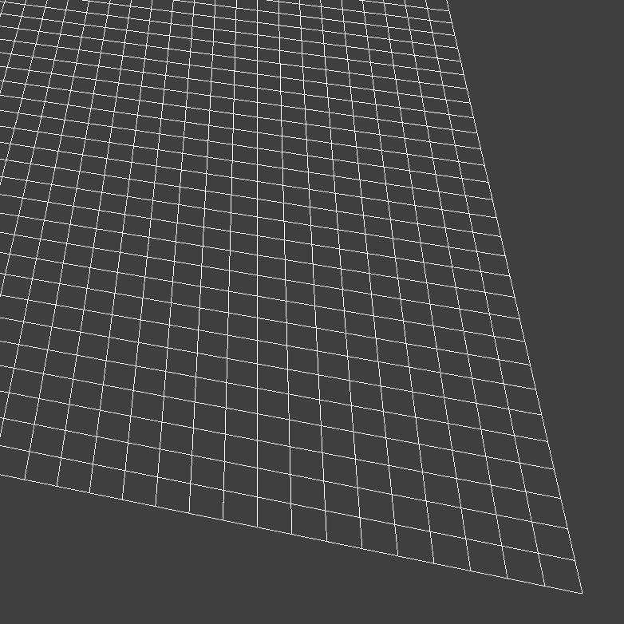
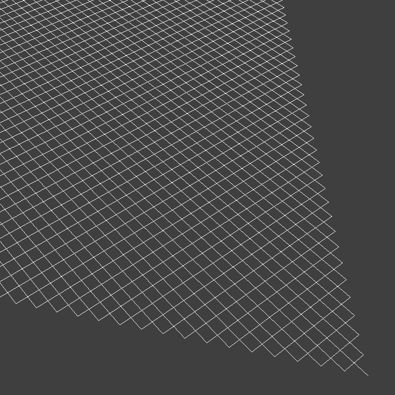
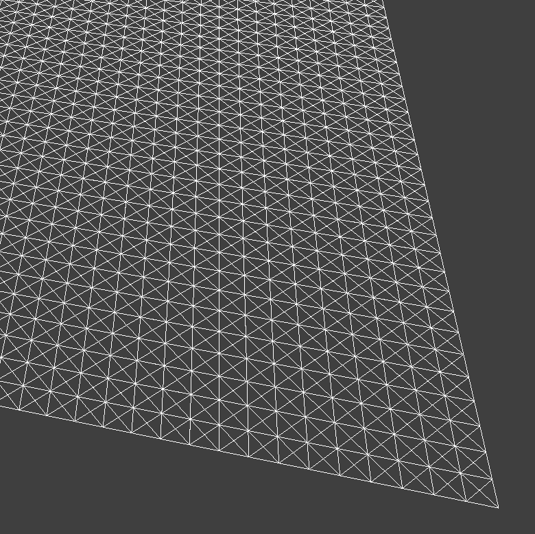
Numerical Integration
Setting the cloth in motion entails computing all external and spring correction forces on the point masses. We apply Verlet integration to update positions at each time step, with a constraint that each spring can stretch by at most 10% of its resting length.
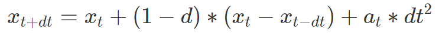
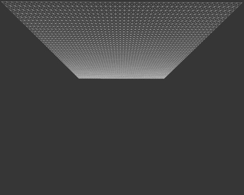
As we increase the spring constant, the cloth becomes more rigid and less bouncy. A low spring constant makes it ripple on its way down with finer creases, while a high constant makes it behave like a swinging sheet of paper.
A dense cloth stretches longer distances due to greater gravitational pull, while a light cloth hardly expands. Aggressive damping slows the fall but reaches rest sooner, while low damping causes prolonged bouncing.
Collisions with Other Objects
We constrain point mass position updates to account for collisions with external objects. For every point mass at each time step, we check if it has passed through the surface of a sphere or plane and nudge it back above the surface. Increasing spring stiffness makes the cloth drape differently over the sphere.
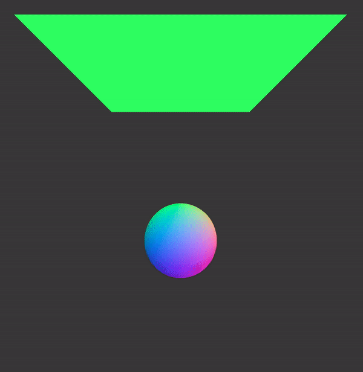
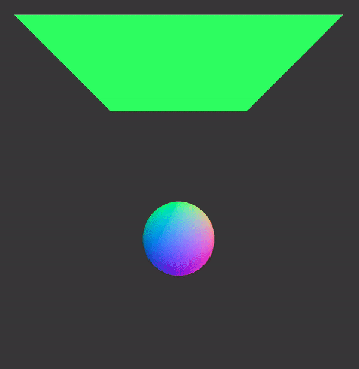
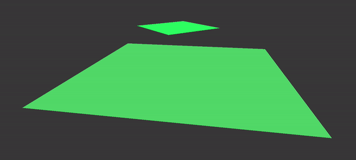
Self-Collisions
We update the model to allow the cloth to collide with itself, producing folding effects without clipping artifacts. A 3D spatial hash map partitions point masses into spatial buckets, making nearby lookups constant-time. Low density yields coarse folds; high density produces many small wrinkles. Varying the spring constant induces inverse behavior relative to adjusting density.
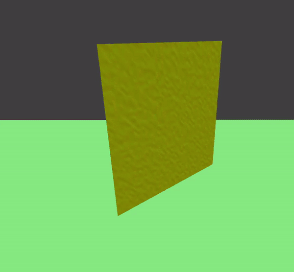
Shaders
We write GLSL vertex and fragment shaders for the cloth and other objects. The vertex shader processes individual vertices, mapping them from world to model space. The fragment shader calculates output color according to the programmed lighting effect.
The Blinn-Phong shading model combines ambient, diffuse, and specular components:
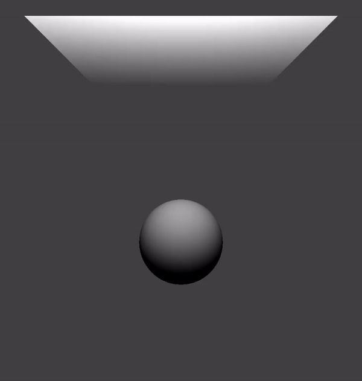
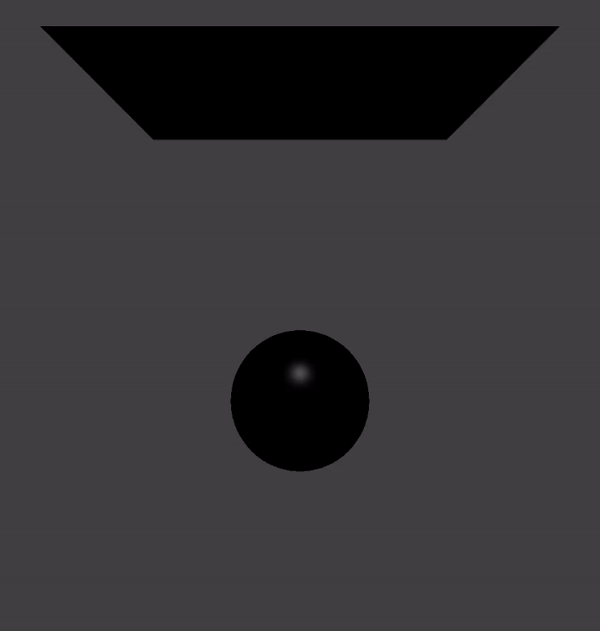
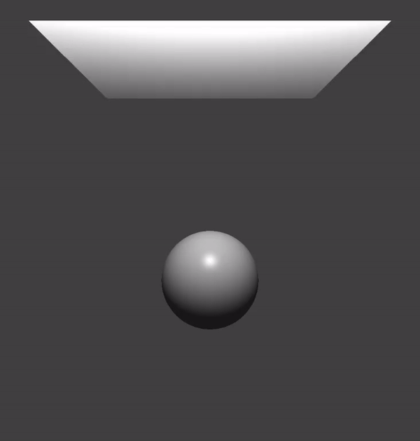
Texture mapping with Kandinsky's Composition VII, bump mapping and displacement mapping with a leaf texture, and environment-mapped reflections of a bridge crossing the Vindel River:

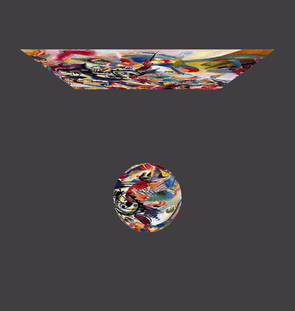
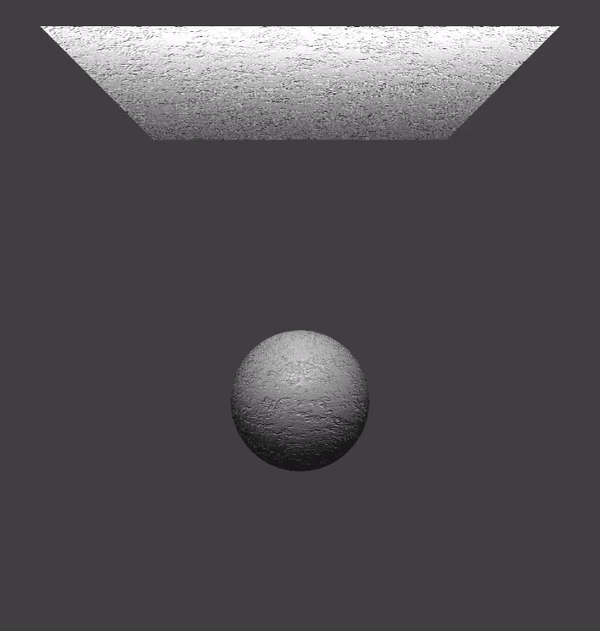
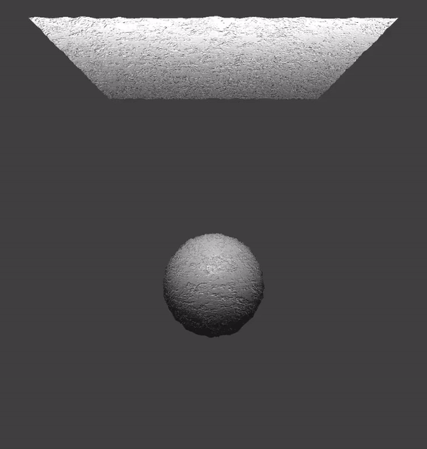
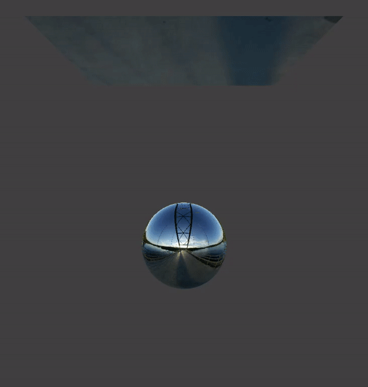